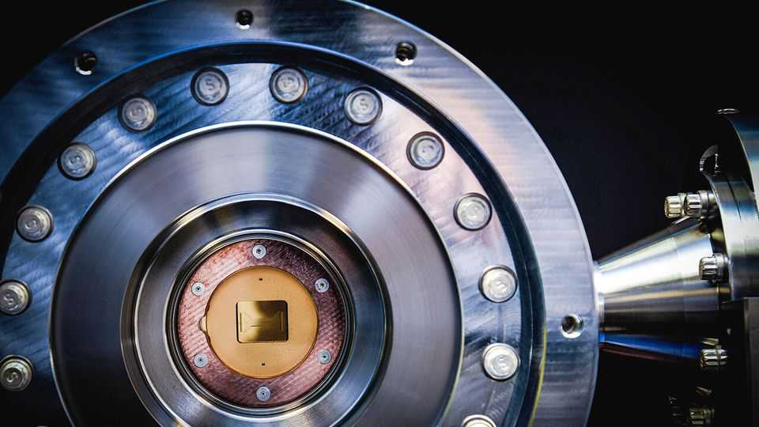

It is past time to upgrade to post-quantum encryption
When the quantum breakthrough comes, data being harvested today will be exposed

Jul 30th 2026
IT IS not just artificial intelligence that is sparking hopes of an imminent productivity miracle. Quantum computing, another long-promised technology, is also making progress and attracting serious interest. Investment in startups in the field rose six-fold in 2025, to $13bn, according to McKinsey, a consultancy. Both startups and tech titans are racing to exploit the technology. In May the Trump administration pledged $2bn to take equity stakes in nine quantum-computing companies.
Quantum computers exploit the weird physics of quantum mechanics to perform some types of calculations at breathtaking speed. Jobs that would take ordinary, “classical” computers billions of years might be polished off in just a few hours. But whereas AI is a general-purpose technology that promises to transform many fields of endeavour, the mathematical superpowers of quantum computers are likely to help in only a few areas, such as making possible rigorous digital simulations of complex physics and chemistry. For many tasks, quantum computers will offer no improvement at all over cheaper ordinary machines.
In one area, though, they are certain to make a world of difference—and perhaps turn out to be destructive. The security and privacy of global commerce and communication depend on forms of encryption that would take classical computers billions of years to crack. A powerful quantum computer might break such codes in just a few minutes, using an algorithm that has already been designed. On “Q-day”, as geeks call it, the encryption methods that permit everything from credit-card details to racy photos to be securely and privately transmitted will no longer be safe to use.
Alarmingly, encrypted data being transmitted today is already at risk since, in reality, Q-day will be a gradual process, not a single event. Intelligence agencies are already harvesting encrypted data in the belief that they will be able to mine it for secrets later. Cybercriminals could be doing the same.
The good news is that a fix already exists. Post-quantum cryptography (pqc) is based on maths that does not seem to be vulnerable to quantum computers, and can be implemented by classical computers now. It is not as battle-tested as existing encryption standards, which have gone unbroken for decades, but the two can be bundled to provide both sorts of protection at once. Web-browsers such as Firefox and Chrome have already enabled pqc, as have Apple’s iMessage service and many big cloud-computing companies. Cloudflare, one such firm, reports that 59% of the front-end web traffic it handles has made the switch, up from 38% a year ago.
Unfortunately this still leaves a lot of data exposed. Just 11% of the servers which Cloudflare deals with on the back end support pqc. And many organisations are full of internet-connected equipment that may not be easy to upgrade. The modest chips in things like sensors or medical devices may be too weedy to handle PQC, which is usually more computationally demanding than standard cryptography. If a gadget’s maker has gone bust, or stopped supporting an old product, there may be no one to provide updates—and even if patches exist, they may not be applied. One reason why Britain’s health service suffered so badly from a malware attack in 2017 was because it used thousands of machines running an unpatched version of Microsoft Windows.
Companies and governments should invest urgently to upgrade their systems. Switching does not guarantee security. PQC is new, so it may have undiscovered vulnerabilities. If so, pqc-protected traffic harvested today could yet be decrypted and abused. But upgrading now—and having researchers stress-test the new methods—offers the best hope of securing data, today and into the future. ■